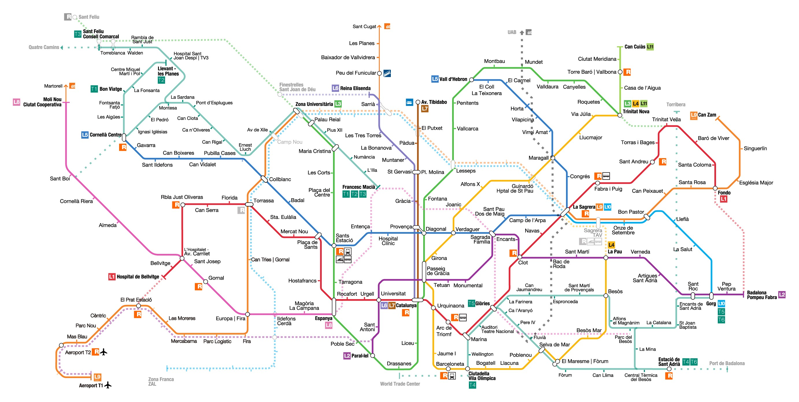

Mapa del metro

Idioma
En Barcelona existen dos idiomas oficiales, el castellano y el catalán.
Moneda
La moneda oficial de Barcelona es el Euro (€).
Electricidad y enchufes
Los enchufes son de tipo europeo, cuentan con dos salidas redondas y un voltaje de 220V.
Teléfonos de interés
Emergencias y policia: 112
Guardia urbana: 062
Bomberos: 080
Emergencias sanitarias: 061
Prefijo de España: +34
Prefijo de Barcelona: 93
Días festivos
Año Nuevo:
1 de enero.
Día de Reyes
6 de enero.
Viernes Santo y Pascua (fecha variable).
Sant Jordi (San Jorge):
23 de abril. Conmemoración del día de la muerte de San Jorge, patrón de Cataluña. Ese día es muy común regalarse rosas y libros.
Día del Trabajo:
1 de mayo.
San Juan:
24 de junio.
La Asunción:
15 de agosto.
Día Nacional de Cataluña:
11 de septiembre. Día en el que se recuerda la derrota que sufrieron los catalanes en 1714 al prohibirse su lengua y su cultura. Hoy en día la libertad es motivo de regocijo.
La Mercè:
24 de septiembre. Fiesta mayor de Barcelona en honor a la Virgen de la Merced. Tienen lugar cabalgatas, desfiles de gigantes y los castellers forman sus torres.
Día de Todos los Santos:
1 de noviembre.
Día de la Constitución:
6 de diciembre.
Día de la Inmaculada Concepción:
8 de diciembre.
Navidad:
25 de diciembre.
San Esteban:
26 de diciembre.
{kind=link}